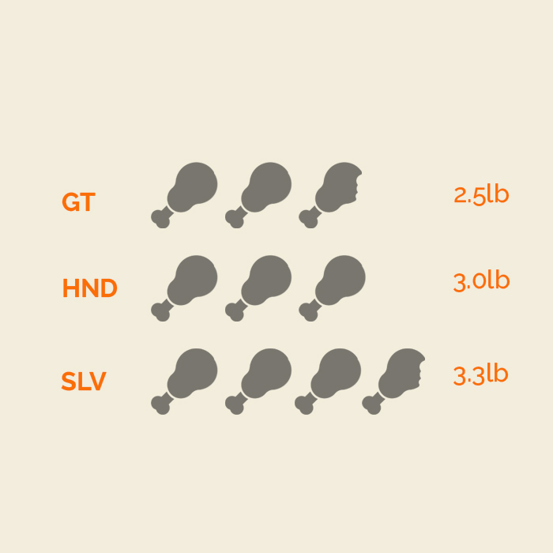
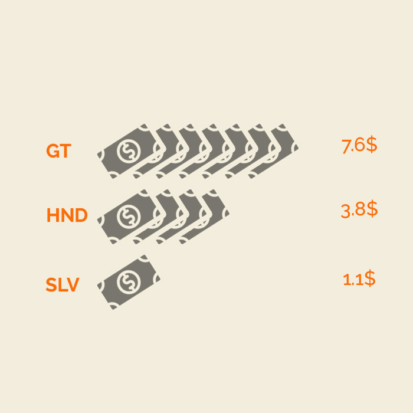

HOW DO REMITTANCES CHANGE LIVES?
The Great 'Northern-Triangle' Migration
The number of refugees and asylum-seekers from the northern countries in Central America has soared in the past 5 years,
and studies show that food security, violence, and climate variability are factors for why people flee.
With over 47,000 asylum-seekers from Central America worldwide, the phenomenon of migration out of destitution from Central America is likely to increase in 2021.
This research explores the factors that drive people in El Salvador, Guatemala, and Honduras to consider and decide to migrate irregularly or regularly,
as well as the cost and economic implications of migration for households and communities throughout the region.
We will examine how remittances impact daily life for families living in the Northern Triangle.
We will look at households that have had a member migrate, divided by whether or not they receive remittances,
in order to better understand the specific changes in daily life that remittances enable.
71% of families in the Northern Triangle that have had a family member
migrate outside of the home country receive remittances.
Monthly Expenditures
Of the families that have had a family member migrate, the ones who are receiving remittances spend more money per person in their household compared to families that are not receiving remittances.
Spending on Food
This difference in monthly spending can be tied to a greater spending on food per person.
Spending on Healthcare
ESOMEPRAZOLE per 20mg (Generic Gerd Medicine).This difference in monthly spending can be tied to a greater spending on food per person.

Spending on Healthcare
This difference in monthly spending can be tied to a greater spending on food per person.
Savings
This difference in monthly spending can be tied to a greater spending on food per person.
Savings
This difference in monthly spending can be tied to a greater spending on food per person.
All Spending Differences
This difference in monthly spending can be tied to a greater spending on food per person.
100
Key Findings
Of the families that have had a family member migrate,
the ones who are receiving remittances spend more money per person
in their household compared to families that are not receiving remittances.
Of the families that have had a family member migrate,
the ones who are receiving remittances spend more money per person
in their household compared to families that are not receiving remittances.
Of the families that have had a family member migrate,
the ones who are receiving remittances spend more money per person
in their household compared to families that are not receiving remittances.
Recommendations
Of the families that have had a family member migrate, the ones who are receiving remittances spend more money per person in their household compared to families that are not receiving remittances.
-
recommendation 1
-
recommendation 2
-
recommendation 3
-
recommendation 4
Daniel Pratama, McKenzie Humann, John Devine